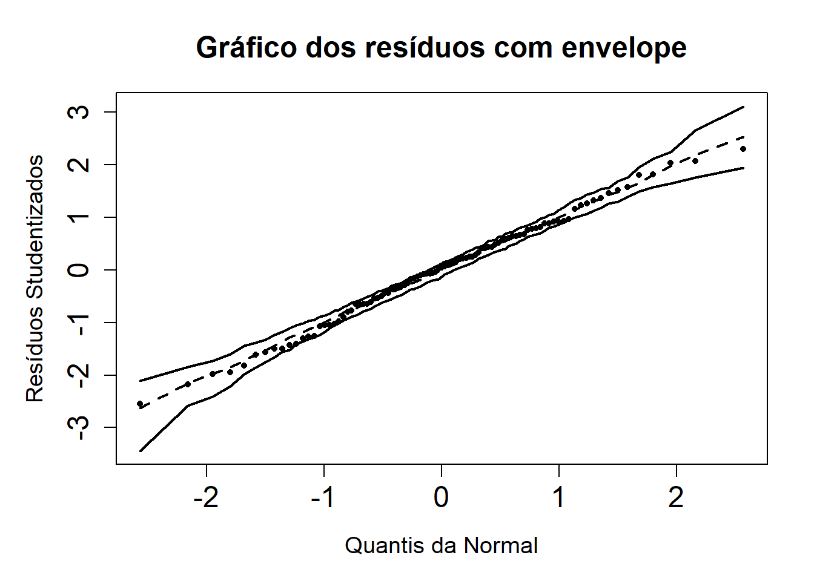

Analisaremos o banco de dados prostate do pacote faraway, em que constam dados de estudo prospectivo com 97 homens com câncer de próstata. A seguir são expostas as primeiras seis linhas do banco de dados:
A variável resposta neste caso é logaritmo do antígeno prostático específico da próstata (lpsa). As covariáveis observadas são: logaritmo do volume do câncer (lcavol), logaritmo do peso da próstata (lweight), idade (age), logaritmo da quantidade de hiperplasia prostática (benignalbph), invasão da vesícula seminal (svi), logaritmo da penetração capsular (lcp), escore de Gleason (gleason), e escore percentual de Gleason 4 ou 5 (pgg45).
Análise exporatória
Iniciamos a análise exploratória com uma avaliação gráfica da distribuição das variáveis disponíveis. Aqui, as variáveis age e pgg45 foram separadas para que não distorcessem a escala das demais variáveis ilustradas.
Dentre o primeiro grupo de variáveis, pode-se destacar uma maior assimetria positiva em gleason e lcp, assim como uma dispersão muito pequena em lweight e svi. Quanto às últimas, é esperada uma pequena variação de lweight já que se trata de um órgão humano e svi é uma variável dicotômica.
Já em relação à variável age, notamos que a maioria dos indivíduos tem em torno de 60 anos. Ao mesmo tempo, vemos que a maioria dos indivíduos tem menos de 50% de escore percentual de Gleason 4 ou 5.
A tabela com medidas resumo a seguir aponta as mesmas assimetrias avaliadas anteriormente e desvios-padrão altos – relativamente à escala de cada variável – para pgg45 e lbph. Notamos ainda que os indivíduos tem entre 41 e 79 anos de idade.
Iniciamos um ajuste de regressão linear utilizando a função lm() do pacote stats utilizando todas as variáveis. Para seleção de algum modelo com melhor desempenho sem a estimação de todos os parâmetros, utilizamos MASS::stepAIC() para uma seleção automática de covariáveis e terminamos com o seguinte modelo, que apresenta R^2= 0.64:
No entanto, é possível ver na tabela a seguir que nem todos os coeficientes podem ser considerados significantes, de modo que reduzimos ainda mais o modelo.
fit2 <-lm(lpsa ~ lcavol + lweight + svi , data = prostate)
Quando consideramos apenas as covariáveis para as quais temos significância a 5%, ficamos com um modelo final expresso pela equação a seguir e temos R^2= 0.63, o que significa que esse percentual da variância dos dados podem ser explicados pelo modelo.
Para construir a tabela da análise de variância, construimos primeiro o modelo apenas com o intercepto e depois comparamos ao modelo selecionado na etapa anterior. A tabela de ANOVA é apresentada na tabela a seguir.
Code
#modelo só com interceptofit0 <-lm(lpsa ~1, data = prostate)#tabela diretamente de anova()tabela <-anova(fit2, fit0) %>%as_tibble() %>%select("gl"= Res.Df, "SQ"= RSS)#montando a fonte de variacao do modelomodelo <-tibble(gl =nrow(prostate) - tabela$gl[1] -1, SQ = tabela$SQ[2] - tabela$SQ[1])#arrumando a tabelatabela_qm <- tabela %>%bind_rows(modelo) %>%arrange(gl) %>%mutate(Fonte =c("Regressão", "Resíduo", "Total"),QM = SQ/gl) %>%select(Fonte, everything())# Calculando F_0 e pvalor do testeF0 <-c(tabela_qm$QM[1]/tabela_qm$QM[2], NA, NA)pval <-pf(F0, df1=tabela_qm$gl[1], df2=tabela_qm$gl[2], lower.tail =FALSE)tabela_anova <- tabela_qm %>%bind_cols("F"= F0,"pval"= pval)options(knitr.kable.NA ='')tabela_anova %>% knitr::kable(align =c("c"),booktabs =TRUE,longtable =TRUE,linesep ="",escape =FALSE,digits =2,col.names =c("Fonte", "g.l.", "SQ", "QM", "F", "p-valor") ) %>% kableExtra::kable_styling(position ="center",latex_options =c("striped", "repeat_header"),stripe_color ="gray!15")
Fonte
g.l.
SQ
QM
F
p-valor
Regressão
3
80.13
26.71
51.99
0
Resíduo
93
47.78
0.51
Total
96
127.92
1.33
Conclui-se, pelo resultado do teste F (o p-valor apresentado na tabela é muito próximo de zero e por isso é arredondado para zero) que há pelo menos um dos coeficientes do modelo diferente de zero a um nível inferior a 0,001% de significância.
Avaliação da variância
Comparando os valores ajustados da resposta com os resíduos Studentizados, os pontos parecem ter comportamento aleatório em torno do zero, sem indicação de mudança na variação dos pontos em algum intervalo de \hat{Y}. Podemos dizer portanto que não há indícios contra a suposição de homocedasticiade do modelo.
Avalia-se a suposição de normalidade dos resíduos comparando os resíduos Studentizados com os quantis da distribuição Normal, tal qual um qqplot, porém com uma banda de confiança obtida via bootstrap paramétrico.
Observa-se que alguns dos pontos de fato parecem margear os limites da banda de confiança, mas estão muito próximos. Afirma-se portanto que não há fuga da suposição de normalidade dos resíduos e, portanto, da resposta.
Code
source("envelope_function.R")envelope_LR(fit2, OLS = T, main.title ="Gráfico dos resíduos com envelope")

Interpretação do modelo
Foram conferidos, portanto, os pressupostos do modelo, de modo que se pode modelar o logaritmo do antígeno prostático específico (lpsa) em função de (0) uma média, o intercepto do modelo, (1) logaritmo do volume do câncer (lcavol), (2) logaritmo do peso da próstata (lweight) e (5) invasão ou não da vesícula seminal (svi) da seguite forma:
Em outros termos, o aumento em uma unidade em alguma das covariáveis X_i aumenta em \beta_i o logaritmo do antígeno prostático específico.
Intervalos de confiança para \beta_i
Code
X <- prostate %>%select(lcavol, lweight, svi) %>%as.matrix()invXtX <-solve(t(X) %*% X)
Consideramos que neste caso \hat{\beta} \sim N_3\left( \beta, \sigma^2(X^\top X)^{-1} \right). Usamos \hat{\sigma^2} como o quadrado médio do resíduo para estimar \sigma^2. A variância de \hat{\beta} portanto é